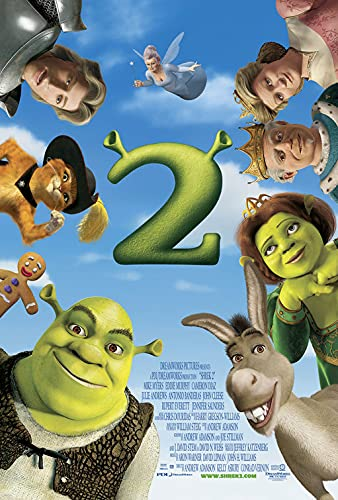
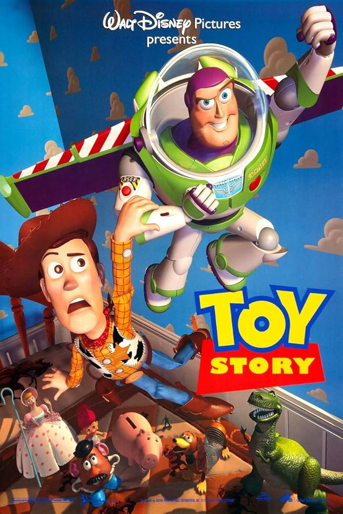
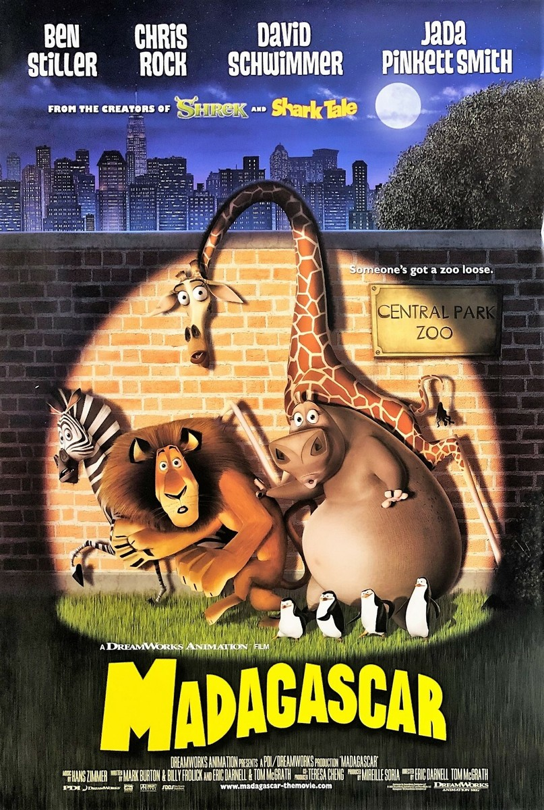
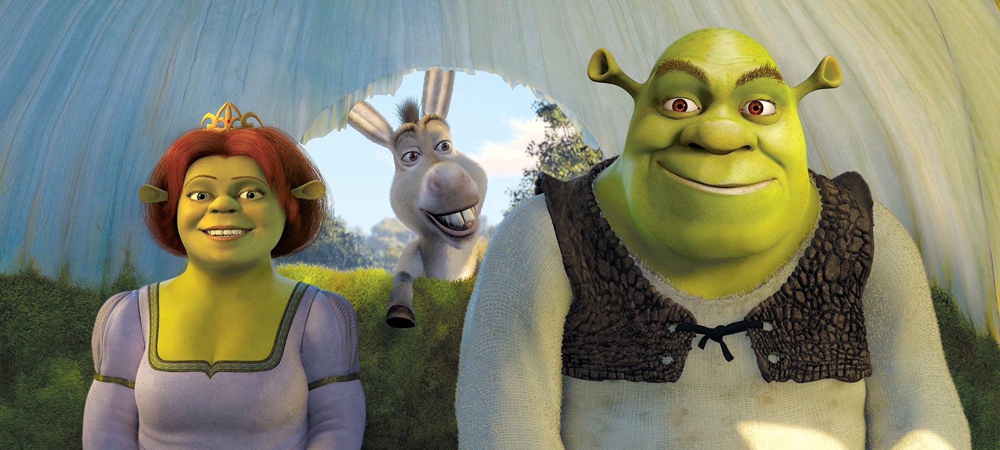
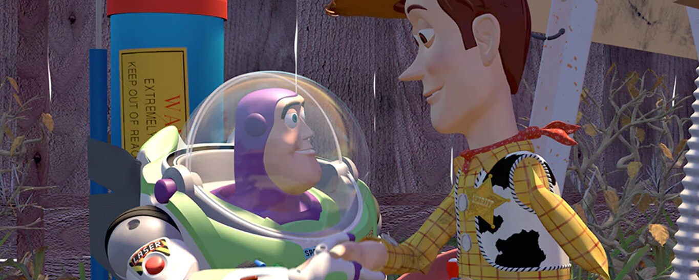
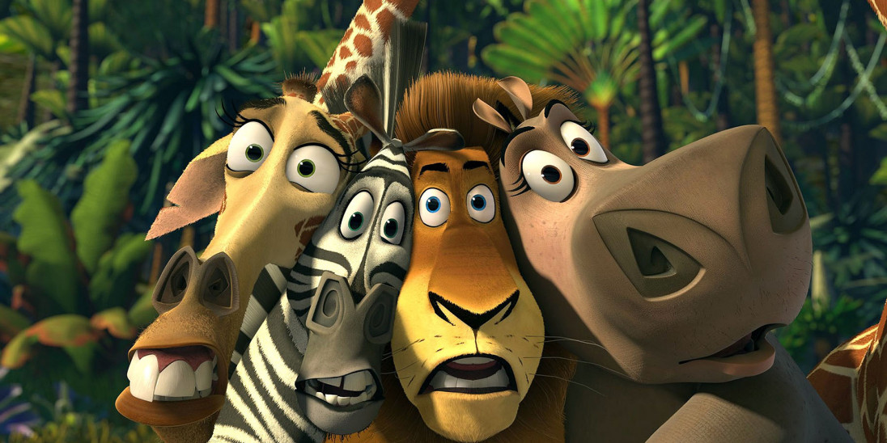

GENRE: Adventure/Comedy/Fantasy RUNTIME: 1h 33m RATING:
Shrek and Fiona travel to the Kingdom of Far Far Away, where Fiona's parents are King and Queen, to celebrate their marriage. When they arrive, they find they are not as welcome as they thought they would be.
funny dvd menu
GENRE: Adventure/Animation/Fantasy RUNTIME: 1h 21m RATING:
A cowboy doll is profoundly jealous when a new spaceman action figure supplants him as the top toy in a boy's bedroom. When circumstances separate them from their owner, the duo have to put aside their differences to return to him.

GENRE: Animation/Adventure/Comedy RUNTIME: 1h 26m RATING:
Longing to roam free in the vast landscapes of Mother Africa, Marty, the bored and dejected zebra of the famous Central Park Zoo, escapes his prison on the night of his tenth birthday celebration. However, after a botched rescue attempt by Marty's companions--Alex, the content lion; Melman, the skittish giraffe, and Gloria, the resolute hippo--the friends will find themselves crated up and shipped off to a remote wildlife preserve, only to end up on the sandy shores of exotic Madagascar. At last, Marty's dream will come true; nevertheless, what does it really mean to be a truly wild animal?